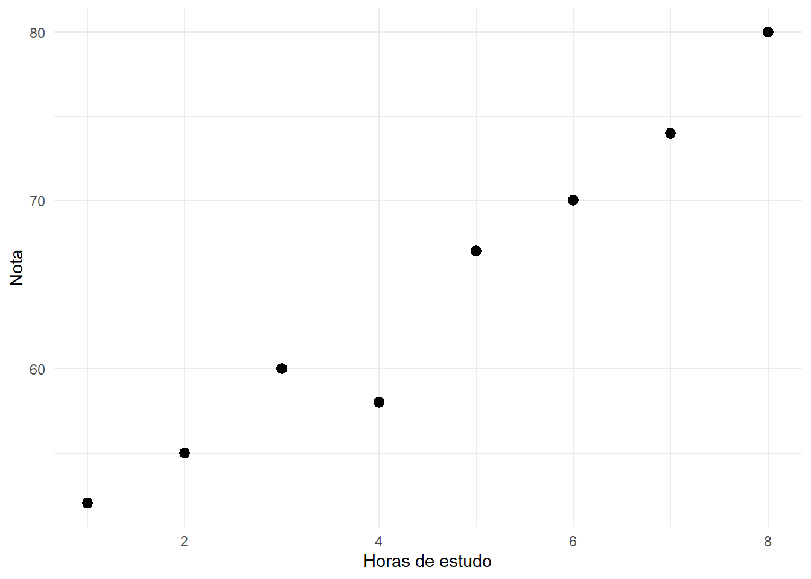
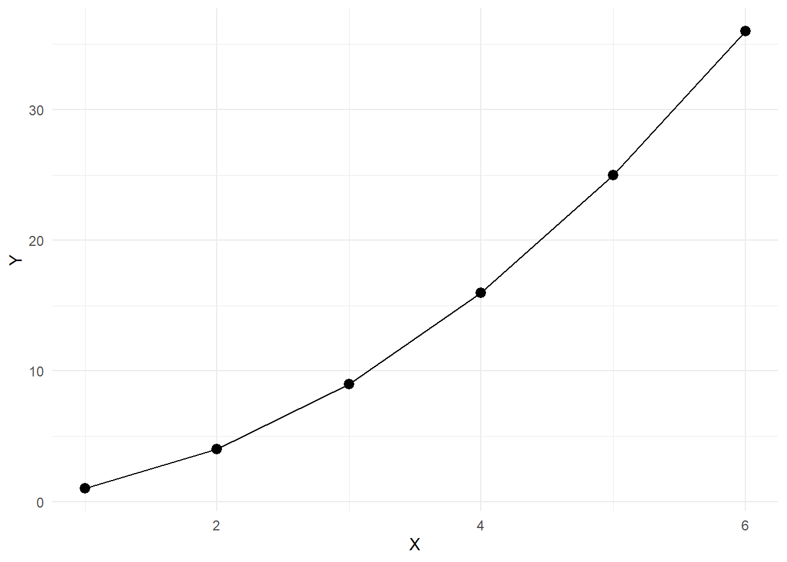
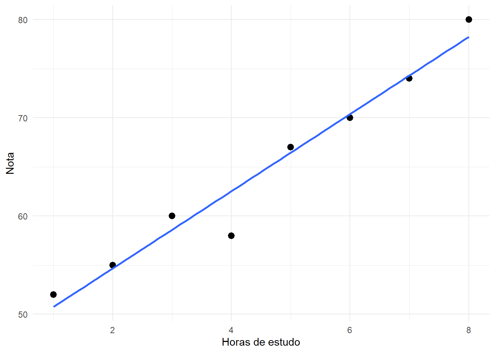
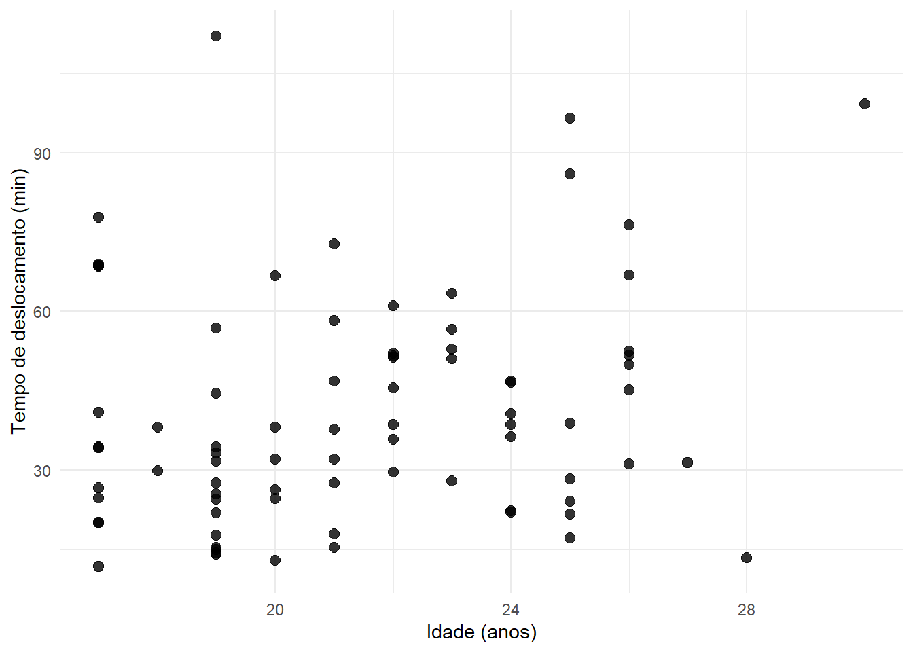
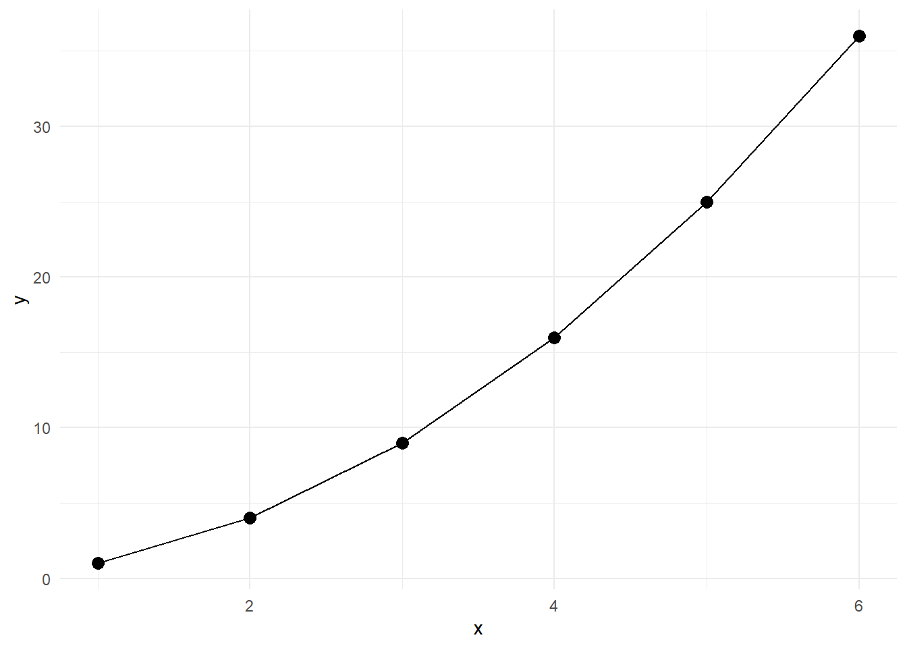
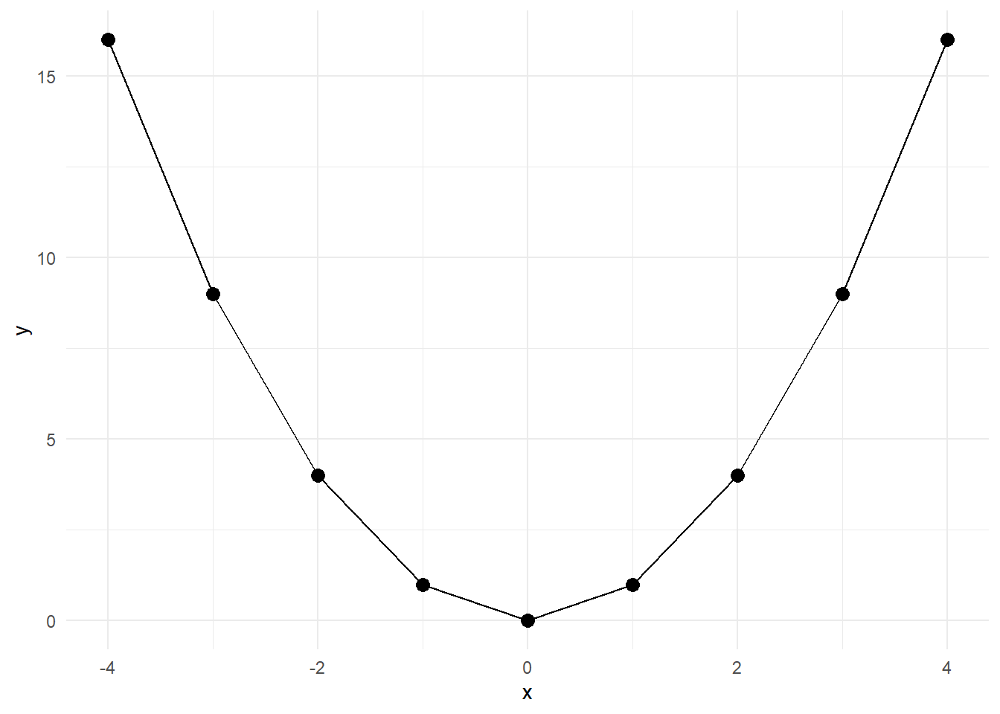
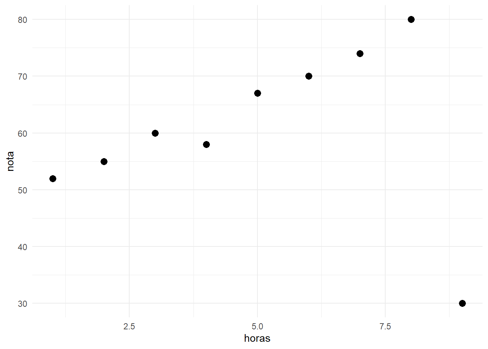
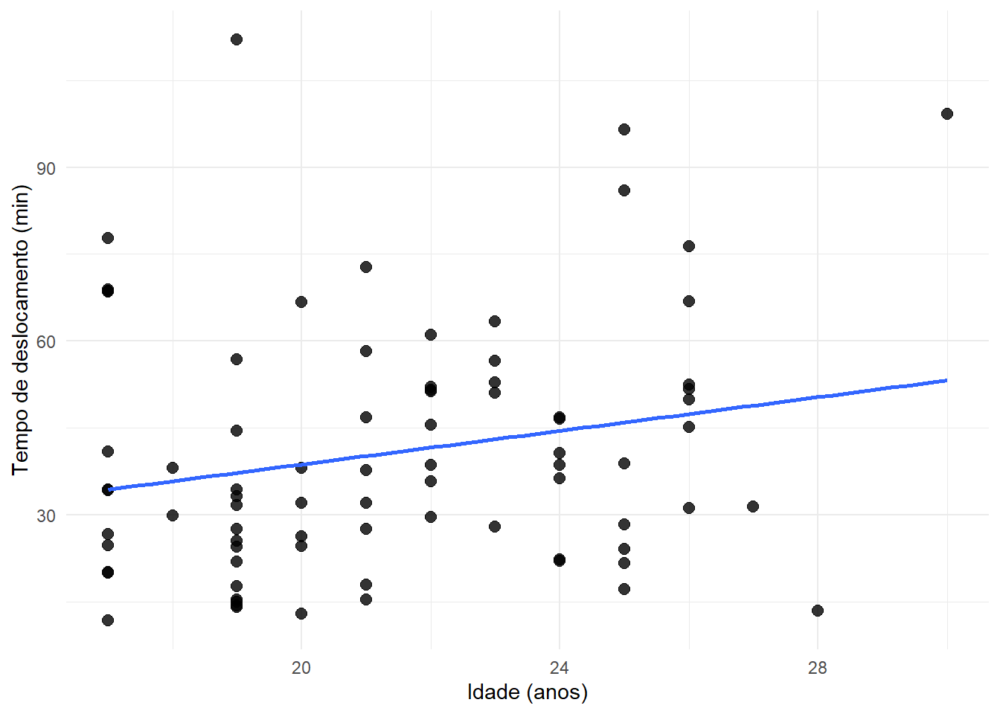
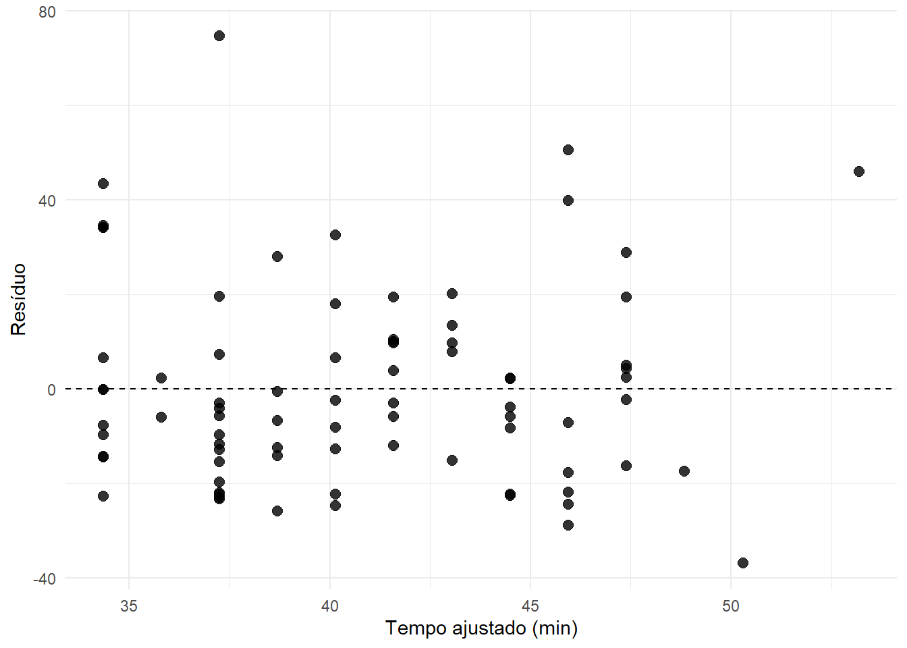

10 Associação entre duas variáveis quantitativas
Nos capítulos anteriores, estudamos inicialmente uma variável de cada vez e, em seguida, passamos à análise conjunta de duas variáveis qualitativas. Agora avançaremos para outra situação fundamental da análise bivariada: o estudo de duas variáveis quantitativas observadas nas mesmas unidades estatísticas.
Exemplos desse tipo de problema incluem:
- idade e tempo de deslocamento;
- altura e massa corporal;
- horas de estudo e nota;
- temperatura e consumo de energia;
- renda e despesa;
- velocidade e consumo de combustível.
Nesses casos, não basta resumir cada variável separadamente. Queremos investigar se os valores de uma variável apresentam algum padrão quando a outra varia.
A questão central passa a ser:
Como duas variáveis quantitativas variam conjuntamente?
Neste capítulo, essa pergunta será explorada por meio de diagramas de dispersão, covariância, correlações de Pearson e Spearman e, na parte computacional, por uma reta de tendência utilizada como ferramenta exploratória.
Objetivos do capítulo
Ao final deste capítulo, espera-se que o estudante seja capaz de:
- reconhecer pares de observações quantitativas;
- construir e interpretar diagramas de dispersão;
- descrever direção, intensidade e forma de uma associação;
- identificar agrupamentos, lacunas e observações potencialmente atípicas;
- compreender o significado da covariância;
- calcular e interpretar a correlação linear de Pearson;
- calcular e interpretar a correlação de Spearman;
- distinguir associação linear de associação monotônica;
- compreender a influência de valores extremos sobre medidas de associação;
- reconhecer que correlação não implica causalidade;
- utilizar uma reta de tendência como resumo exploratório de uma relação aproximadamente linear;
- interpretar valores ajustados, resíduos e o coeficiente de determinação;
- reconhecer os riscos da extrapolação.
Toda a abordagem deste capítulo permanece descritiva e exploratória. Não utilizaremos testes de hipóteses, valores-\(p\), intervalos de confiança ou conclusões inferenciais.
10.1 Pares de variáveis quantitativas
Sejam duas variáveis quantitativas \(X\) e \(Y\) observadas nos mesmos \(n\) indivíduos.
Para cada unidade estatística \(i\), registramos o par
\[ (x_i,y_i). \]
Assim, os dados bivariados podem ser representados por
\[ (x_1,y_1),\; (x_2,y_2),\; \ldots,\; (x_n,y_n). \]
O pareamento continua sendo essencial: os valores \(x_i\) e \(y_i\) devem pertencer à mesma unidade observacional.
10.1.1 Exemplo
Considere oito estudantes para os quais foram registrados o número de horas de estudo em determinada semana e a nota obtida em uma atividade.
| Estudante | Horas de estudo (\(x\)) | Nota (\(y\)) |
|---|---|---|
| 1 | 1 | 52 |
| 2 | 2 | 55 |
| 3 | 3 | 60 |
| 4 | 4 | 58 |
| 5 | 5 | 67 |
| 6 | 6 | 70 |
| 7 | 7 | 74 |
| 8 | 8 | 80 |
A Tabela 10.1 contém duas distribuições univariadas, mas também contém algo adicional: a informação de quais duas observações pertencem ao mesmo estudante.
Por exemplo,
\[ (1,52) \]
e
\[ (8,80) \]
são dois dos pares observados.
Se embaralhássemos apenas a coluna das notas, as médias e os desvios padrão das duas variáveis permaneceriam os mesmos, mas a relação entre horas de estudo e nota seria alterada. A análise bivariada depende, portanto, do pareamento.
10.2 Diagrama de dispersão
A primeira ferramenta para investigar duas variáveis quantitativas é o diagrama de dispersão.
Cada par \((x_i,y_i)\) é representado por um ponto no plano cartesiano:
- o valor de \(X\) determina a posição horizontal;
- o valor de \(Y\) determina a posição vertical.
No exemplo das horas de estudo e notas:
A Figura 10.1 sugere que estudantes com maior número de horas de estudo tendem, nesse pequeno conjunto, a apresentar notas maiores.
Essa conclusão é descritiva. O gráfico mostra associação, mas não demonstra que estudar mais seja a única causa das diferenças nas notas.
10.2.1 O que observar em um diagrama de dispersão?
Uma leitura cuidadosa deve considerar pelo menos cinco aspectos:
- direção da associação;
- intensidade do padrão;
- forma da relação;
- presença de agrupamentos ou lacunas;
- presença de observações potencialmente atípicas.
10.3 Direção da associação
A direção descreve se valores maiores de uma variável tendem a estar associados a valores maiores ou menores da outra.
10.3.1 Associação positiva
Uma associação é positiva quando valores maiores de \(X\) tendem a acompanhar valores maiores de \(Y\).
No exemplo das horas de estudo e notas, o padrão é predominantemente crescente.
Podemos representar a ideia por
\[ X\uparrow \quad\Longrightarrow\quad Y\uparrow. \]
Isso não significa que todos os pontos estejam perfeitamente alinhados. O interesse está na tendência geral.
10.3.2 Associação negativa
Uma associação é negativa quando valores maiores de \(X\) tendem a acompanhar valores menores de \(Y\).
Por exemplo, em determinado contexto, poderíamos observar uma relação entre velocidade média de execução de uma tarefa e tempo necessário para concluí-la:
\[ X\uparrow \quad\Longrightarrow\quad Y\downarrow. \]
10.3.3 Ausência de direção clara
Também pode ocorrer de os pontos não apresentarem uma tendência crescente ou decrescente perceptível.
Nesse caso, dizemos que não há uma associação direcional clara.
Ausência de direção linear não significa ausência de relação
Um conjunto pode apresentar uma relação forte e, ainda assim, não mostrar tendência crescente ou decrescente.
Isso ocorre, por exemplo, em relações em forma de U.
Por essa razão, o diagrama de dispersão deve ser examinado antes de resumir a associação por um único coeficiente.
10.4 Intensidade da associação
A intensidade descreve o quanto os pontos seguem um padrão reconhecível.
Quando os pontos ficam próximos de uma linha crescente ou decrescente, a associação linear tende a ser mais intensa.
Quando os pontos estão muito espalhados ao redor da tendência, a associação linear tende a ser mais fraca.
Não existe, entretanto, uma classificação universal que transforme automaticamente valores de correlação em “fraco”, “moderado” ou “forte”. A interpretação depende:
- da área de aplicação;
- da qualidade das medidas;
- da variabilidade natural do fenômeno;
- do objetivo da análise;
- da forma observada no gráfico.
Assim, medidas numéricas devem ser interpretadas juntamente com o diagrama de dispersão.
10.5 Forma da associação
Duas variáveis podem estar associadas de diferentes maneiras.
10.5.1 Relação aproximadamente linear
Uma relação é aproximadamente linear quando a nuvem de pontos pode ser razoavelmente resumida por uma linha reta.
O exemplo da Figura 10.1 apresenta esse comportamento.
10.5.2 Relação não linear
Nem toda associação possui forma linear.
Considere
\[ Y=X^2. \]
Na Figura 10.2, existe uma relação exata entre as duas variáveis: conhecendo \(X\), conhecemos \(Y\).
Entretanto, a relação não é crescente em todo o domínio nem pode ser adequadamente resumida por uma única reta.
Esse exemplo será importante quando estudarmos a correlação de Pearson.
10.6 Agrupamentos, lacunas e observações potencialmente atípicas
O diagrama de dispersão fornece informações que não aparecem em um único coeficiente numérico.
10.6.1 Agrupamentos
A presença de dois ou mais agrupamentos pode indicar que os dados contêm subgrupos com características diferentes.
Por exemplo, um gráfico de altura e massa corporal pode apresentar agrupamentos associados a diferentes faixas etárias.
Quando grupos distintos aparecem, pode ser inadequado resumir toda a nuvem de pontos com um único coeficiente.
10.6.2 Lacunas
Uma região sem pontos pode refletir:
- ausência real de observações naquela combinação;
- limitação do processo de coleta;
- estrutura de grupos;
- restrições naturais das variáveis.
As lacunas merecem investigação, e não devem ser ignoradas automaticamente.
10.6.3 Observações potencialmente atípicas
Um ponto muito distante dos demais pode influenciar fortemente medidas de associação.
É importante distinguir:
- um valor extremo em uma das variáveis;
- um ponto distante da tendência geral;
- um erro de registro.
Essas situações não são equivalentes.
Valor atípico não significa valor errado
Um ponto incomum pode representar uma observação real e informativa.
Antes de excluir qualquer ponto, deve-se investigar sua origem e seu contexto.
10.7 Covariância
A covariância é uma primeira medida numérica da maneira como duas variáveis quantitativas variam conjuntamente.
A ideia parte dos desvios em relação às médias:
\[ x_i-\bar{x} \]
e
\[ y_i-\bar{y}. \]
Para cada par, multiplicamos esses desvios:
\[ (x_i-\bar{x})(y_i-\bar{y}). \]
O sinal desse produto possui interpretação simples.
- Se \(x_i\) e \(y_i\) estão ambos acima de suas médias, o produto é positivo.
- Se ambos estão abaixo de suas médias, o produto também é positivo.
- Se um está acima e o outro abaixo, o produto é negativo.
Portanto, quando predominam pares que se afastam das médias na mesma direção, a covariância tende a ser positiva.
Quando predominam afastamentos em direções opostas, a covariância tende a ser negativa.
10.7.1 Covariância populacional
Para uma população com \(N\) pares,
\[ \sigma_{XY} = \frac{1}{N} \sum_{i=1}^{N} (x_i-\mu_X)(y_i-\mu_Y). \]
10.7.2 Covariância amostral
Para uma amostra com \(n\) pares,
\[ s_{XY} = \frac{1}{n-1} \sum_{i=1}^{n} (x_i-\bar{x})(y_i-\bar{y}). \]
10.7.3 Exemplo
Na Tabela 10.1,
\[ \bar{x}=4{,}5 \]
e
\[ \bar{y}=64{,}5. \]
A soma dos produtos dos desvios é
\[ \sum (x_i-\bar{x})(y_i-\bar{y}) = 165. \]
Portanto, a covariância amostral é
\[ s_{XY} = \frac{165}{8-1} \approx 23{,}57. \]
O valor positivo indica que, nesse conjunto, valores acima da média de horas de estudo tendem a acompanhar notas acima da média, e valores abaixo da média de horas tendem a acompanhar notas abaixo da média.
10.7.4 Limitação da covariância
Embora o sinal da covariância seja informativo, seu valor numérico depende das unidades de medida.
Se \(X\) for medido em horas e \(Y\) em pontos, a covariância possui unidade
\[ \text{horas}\times\text{pontos}. \]
Uma mudança de escala altera seu valor.
Por isso, números como
\[ 23{,}57 \]
não possuem uma interpretação universal de intensidade.
Essa limitação motiva a padronização da covariância, dando origem ao coeficiente de correlação.
10.8 Coeficiente de correlação linear de Pearson
O coeficiente de correlação linear de Pearson mede a direção e a intensidade da associação linear entre duas variáveis quantitativas.
Para uma amostra,
\[ r = \frac{s_{XY}}{s_Xs_Y}. \]
Uma forma equivalente, que explicita os desvios em relação às médias, é
\[ r = \frac{ \sum_{i=1}^{n} (x_i-\bar{x})(y_i-\bar{y}) }{ \sqrt{ \sum_{i=1}^{n} (x_i-\bar{x})^2 } \sqrt{ \sum_{i=1}^{n} (y_i-\bar{y})^2 } }. \]
Ao dividir a covariância pelos desvios padrão das duas variáveis, eliminamos as unidades de medida.
O coeficiente de Pearson é, portanto, adimensional.
Além disso,
\[ -1\leq r\leq1. \]
10.8.1 Interpretação do sinal
- \(r>0\): associação linear positiva;
- \(r<0\): associação linear negativa;
- \(r\) próximo de zero: pouca associação linear.
10.8.2 Interpretação do módulo
Quanto mais próximo \(|r|\) estiver de 1, mais os pontos se aproximam de uma reta.
Quando
\[ r=1, \]
todos os pontos estão exatamente sobre uma reta crescente.
Quando
\[ r=-1, \]
todos os pontos estão exatamente sobre uma reta decrescente.
Quando
\[ r=0, \]
não há associação linear, mas pode existir uma associação não linear.
10.8.3 Exemplo
No exemplo das horas de estudo,
\[ \sum (x_i-\bar{x})(y_i-\bar{y}) = 165, \]
\[ \sum (x_i-\bar{x})^2 = 42 \]
e
\[ \sum (y_i-\bar{y})^2 = 676. \]
Logo,
\[ r = \frac{165} {\sqrt{42\times676}} \approx 0{,}979. \]
O valor é positivo e muito próximo de 1, indicando uma associação linear positiva bastante intensa nesse conjunto de oito observações.
Isso é coerente com o padrão visual da Figura 10.1.
Correlação de Pearson mede linearidade
Um valor de \(r\) próximo de zero não autoriza concluir que as variáveis são independentes ou que não existe relação entre elas.
No exemplo
\[ Y=X^2, \]
com valores de \(X\) simétricos em torno de zero, a correlação de Pearson é aproximadamente zero, embora a relação entre \(X\) e \(Y\) seja exata.
O diagrama de dispersão continua sendo indispensável.
10.8.4 Propriedades da correlação de Pearson
O coeficiente de Pearson:
- varia entre \(-1\) e \(1\);
- é adimensional;
- é simétrico, isto é,
\[ r_{XY}=r_{YX}; \]
- não se altera quando adicionamos uma constante a todos os valores de uma variável;
- não se altera em módulo quando multiplicamos uma variável por uma constante não nula;
- muda de sinal se apenas uma das variáveis for multiplicada por uma constante negativa;
- mede associação linear;
- utiliza todos os pares observados;
- pode ser fortemente influenciado por observações extremas.
10.9 Coeficiente de correlação de Spearman
Nem toda associação interessante é bem descrita por uma reta.
Em algumas situações, queremos avaliar se valores maiores de \(X\) tendem, de maneira geral, a acompanhar valores maiores ou menores de \(Y\), ainda que a relação seja curva.
O coeficiente de correlação de Spearman utiliza as posições ordenadas, ou postos, dos valores.
A ideia é:
- ordenar os valores de \(X\) e atribuir seus postos;
- fazer o mesmo para \(Y\);
- calcular a correlação de Pearson entre esses postos.
Se representarmos os postos por
\[ R(X) \qquad\text{e}\qquad R(Y), \]
então
\[ r_s = \operatorname{cor} \bigl( R(X),R(Y) \bigr). \]
Quando não existem empates, também pode ser utilizada a expressão
\[ r_s = 1- \frac{ 6\sum d_i^2 }{ n(n^2-1) }, \]
em que \(d_i\) é a diferença entre os postos das duas variáveis para a observação \(i\).
10.9.1 Exemplo
No exemplo das horas de estudo, os postos das horas são
\[ 1,2,3,4,5,6,7,8. \]
As notas possuem a ordenação
\[ 52,\;55,\;58,\;60,\;67,\;70,\;74,\;80. \]
Assim, apenas as notas 58 e 60 aparecem invertidas em relação à ordem das horas.
A soma dos quadrados das diferenças entre os postos é
\[ \sum d_i^2=2. \]
Logo,
\[ r_s = 1- \frac{ 6(2) }{ 8(8^2-1) } \approx 0{,}976. \]
Nesse exemplo, Pearson e Spearman são muito próximos, pois o padrão é simultaneamente quase linear e quase perfeitamente crescente.
10.9.2 Associação monotônica
Spearman é especialmente útil para descrever uma relação monotônica.
Uma relação é monotônica crescente quando, em termos gerais, valores maiores de \(X\) acompanham valores maiores de \(Y\), mesmo que a relação não seja linear.
Considere:
\[ Y=X^2, \qquad X=1,2,\ldots,6. \]
Nesse intervalo, a relação é crescente, mas curva.

Para esses dados,
\[ r\approx0{,}979, \]
enquanto
\[ r_s=1. \]
Spearman é igual a 1 porque a ordem dos valores é perfeitamente preservada: todo aumento de \(X\) corresponde a um aumento de \(Y\).
Pearson e Spearman respondem a perguntas diferentes
Pearson resume associação linear.
Spearman resume associação monotônica baseada em postos.
Nenhum dos dois substitui a inspeção do diagrama de dispersão.
10.10 Influência de observações extremas
A correlação de Pearson pode mudar substancialmente com a inclusão de uma única observação distante da nuvem principal.
Retome o exemplo das horas de estudo, para o qual
\[ r\approx0{,}979. \]
Agora acrescente o par
\[ (9,30). \]
Esse ponto possui um valor elevado de horas de estudo, mas uma nota muito inferior à tendência dos demais.
Com essa única observação, a correlação de Pearson passa para aproximadamente
\[ r\approx0{,}084. \]
A associação linear que antes parecia muito intensa praticamente desaparece quando resumida por \(r\).
A correlação de Spearman também é afetada, mas passa para aproximadamente
\[ r_s\approx0{,}383. \]
Esse exemplo ilustra duas ideias:
- medidas de associação devem ser analisadas juntamente com o gráfico;
- uma observação incomum pode carregar grande influência sobre o resultado.
Não exclua um ponto apenas para aumentar a correlação
Uma observação extrema deve ser investigada.
Ela pode representar:
- erro de registro;
- situação real rara;
- integrante de outro subgrupo;
- comportamento importante do fenômeno.
Excluir um valor simplesmente porque reduz a correlação produz uma análise inadequada.
10.11 Correlação não implica causalidade
Uma correlação descreve como duas variáveis variam conjuntamente.
Ela não demonstra, por si só, que mudanças em uma variável causem mudanças na outra.
Uma associação pode surgir porque:
- \(X\) influencia \(Y\);
- \(Y\) influencia \(X\);
- uma terceira variável influencia ambas;
- existem diferentes grupos misturados nos dados;
- as duas variáveis compartilham uma tendência temporal;
- a associação é consequência da forma como os dados foram selecionados;
- ocorreu uma coincidência no conjunto observado.
10.11.1 Exemplo
Suponha que, ao longo de vários meses, aumentem simultaneamente:
- as vendas de sorvete;
- o consumo de energia elétrica para refrigeração.
Uma correlação positiva entre essas variáveis não significa que comprar sorvete cause aumento direto do consumo de energia residencial.
A temperatura pode estar associada às duas.
Esse tipo de situação mostra a importância de considerar o contexto e possíveis variáveis adicionais.
10.12 Correlações espúrias
Uma correlação é chamada de espúria quando sugere uma relação substantiva que não corresponde ao mecanismo de interesse.
Isso pode ocorrer, por exemplo, quando duas séries aumentam ao longo do tempo por razões distintas.
Também pode surgir quando examinamos muitas variáveis e selecionamos apenas as correlações mais altas sem uma justificativa contextual.
Uma correlação deve fazer sentido no contexto
O valor numérico de \(r\) ou \(r_s\) não é suficiente.
Uma análise adequada deve perguntar:
- quais são as variáveis?
- como foram medidas?
- existe um mecanismo plausível que explique a associação?
- há subgrupos?
- existem observações influentes?
- a forma da relação é realmente linear ou monotônica?
10.13 Reta de tendência como ferramenta exploratória
Quando o diagrama de dispersão sugere uma relação aproximadamente linear, podemos resumir a tendência por uma reta.
Se \(X\) for utilizada como variável explicativa e \(Y\) como variável resposta, escrevemos
\[ \widehat{Y} = b_0+b_1X. \]
O símbolo
\[ \widehat{Y} \]
representa o valor ajustado de \(Y\) pela reta.
A escolha de qual variável ocupa o eixo \(X\) e qual ocupa o eixo \(Y\) deve ser determinada pelo contexto da análise.
Diferentemente da correlação,
\[ r_{XY}=r_{YX}, \]
a regressão não é simétrica: ajustar \(Y\) em função de \(X\) não é a mesma coisa que ajustar \(X\) em função de \(Y\).
10.13.1 Método dos mínimos quadrados
A reta é escolhida de modo a tornar pequenos, em conjunto, os desvios verticais entre os valores observados e os valores ajustados.
Esses desvios são chamados de resíduos.
Para a observação \(i\),
\[ e_i = y_i-\widehat{y}_i. \]
O método dos mínimos quadrados escolhe a reta que minimiza
\[ \sum_{i=1}^{n}e_i^2. \]
Para uma regressão linear simples,
\[ b_1 = \frac{ \sum (x_i-\bar{x})(y_i-\bar{y}) }{ \sum (x_i-\bar{x})^2 } \]
e
\[ b_0 = \bar{y}-b_1\bar{x}. \]
10.13.2 Exemplo
No exemplo das horas de estudo,
\[ \sum (x_i-\bar{x})(y_i-\bar{y}) = 165 \]
e
\[ \sum (x_i-\bar{x})^2 = 42. \]
Assim,
\[ b_1 = \frac{165}{42} \approx 3{,}93. \]
Como
\[ \bar{x}=4{,}5 \]
e
\[ \bar{y}=64{,}5, \]
temos
\[ b_0 = 64{,}5- 3{,}93(4{,}5) \approx 46{,}82. \]
A reta ajustada é
\[ \widehat{y} = 46{,}82+ 3{,}93x. \]
Dentro da faixa de horas observada, a inclinação indica que um acréscimo de uma hora em \(X\) está associado, na reta ajustada, a um aumento de aproximadamente
\[ 3{,}93 \]
pontos na nota.
Essa é uma interpretação descritiva da inclinação. Não devemos afirmar, apenas com esses dados, que uma hora adicional de estudo causa exatamente 3,93 pontos de aumento.

A Figura 10.4 mostra que os pontos permanecem relativamente próximos da reta.
10.14 Valores ajustados e resíduos
Para cada valor observado de \(x_i\), a reta fornece um valor ajustado
\[ \widehat{y}_i. \]
O resíduo é
\[ e_i = y_i-\widehat{y}_i. \]
Portanto:
- \(e_i>0\): o ponto observado está acima da reta;
- \(e_i<0\): o ponto observado está abaixo da reta;
- \(e_i=0\): o ponto está exatamente sobre a reta.
Para o exemplo anterior:
| Horas | Nota observada | Nota ajustada | Resíduo |
|---|---|---|---|
| 1 | 52 | 50,75 | 1,25 |
| 2 | 55 | 54,68 | 0,32 |
| 3 | 60 | 58,61 | 1,39 |
| 4 | 58 | 62,54 | -4,54 |
| 5 | 67 | 66,46 | 0,54 |
| 6 | 70 | 70,39 | -0,39 |
| 7 | 74 | 74,32 | -0,32 |
| 8 | 80 | 78,25 | 1,75 |
A maior discrepância desse pequeno exemplo ocorre para quatro horas de estudo: a reta ajusta aproximadamente 62,54 pontos, enquanto a nota observada foi 58.
Assim,
\[ e = 58-62{,}54 = -4{,}54. \]
10.15 Gráfico de resíduos
Uma reta pode parecer razoável no diagrama de dispersão e ainda deixar algum padrão não explicado.
Por isso, é útil representar os resíduos em função dos valores ajustados ou de \(X\).
Em uma relação bem resumida por uma reta, espera-se, descritivamente, que os resíduos fiquem distribuídos em torno de zero sem um padrão sistemático evidente.
Um gráfico de resíduos pode revelar:
- curvatura, sugerindo relação não linear;
- aumento ou redução da dispersão;
- observações com resíduos muito grandes;
- agrupamentos não percebidos inicialmente.
O gráfico de resíduos não deve ser tratado apenas como uma formalidade. Ele ajuda a verificar o que a reta deixou de explicar como padrão.
10.16 Coeficiente de determinação
O coeficiente de determinação, representado por \(R^2\), mede quanto da variabilidade de \(Y\) em torno de sua média é descrita pelo ajuste linear.
Defina a variação total de \(Y\) por
\[ SQ_T = \sum_{i=1}^{n} (y_i-\bar{y})^2 \]
e a soma dos quadrados dos resíduos por
\[ SQ_E = \sum_{i=1}^{n} (y_i-\widehat{y}_i)^2. \]
Então,
\[ R^2 = 1- \frac{SQ_E}{SQ_T}. \]
No exemplo,
\[ SQ_T=676 \]
e
\[ SQ_E\approx27{,}79. \]
Logo,
\[ R^2 = 1- \frac{27{,}79}{676} \approx 0{,}959. \]
Podemos escrever
\[ R^2\approx95{,}9\%. \]
Nesse conjunto, aproximadamente 95,9% da variabilidade observada nas notas em torno da média é descrita pela reta ajustada às horas de estudo.
O que R² não significa
Um \(R^2\) elevado não prova causalidade.
Também não significa que o modelo seja adequado em qualquer faixa de valores, nem que previsões futuras serão necessariamente precisas.
\(R^2\) deve ser interpretado juntamente com:
- o diagrama de dispersão;
- a forma da relação;
- os resíduos;
- o contexto das variáveis.
Na regressão linear simples com intercepto, existe uma relação importante:
\[ R^2=r^2, \]
em que \(r\) é a correlação de Pearson entre \(X\) e \(Y\).
No exemplo,
\[ r\approx0{,}979 \]
e
\[ r^2\approx0{,}959. \]
10.17 Extrapolação
A reta ajustada descreve a tendência observada na faixa de valores estudada.
No exemplo das horas de estudo, observamos valores entre
\[ 1 \quad\text{e}\quad 8 \]
horas.
Utilizar a reta para estimar a nota correspondente a 6 horas é uma interpolação dentro da região observada.
Utilizá-la para 20 horas seria uma extrapolação.
Mesmo que a equação permita calcular
\[ \widehat{y} = 46{,}82+ 3{,}93(20), \]
não temos evidência, com esses dados, de que a mesma tendência linear continue válida até 20 horas.
Uma equação pode produzir um número sem produzir uma conclusão válida
O fato de ser possível substituir qualquer valor de \(X\) na equação não significa que o resultado tenha interpretação estatística adequada.
Antes de usar uma reta fora da faixa observada, é necessário justificar por que a relação deveria continuar com a mesma forma.
10.18 Laboratório no R
Nesta parte prática, utilizaremos tanto exemplos construídos para destacar propriedades dos coeficientes quanto o banco dos 80 estudantes já utilizado nos capítulos anteriores.
10.18.1 Preparando os dados
Código
library(tidyverse)
dados <- read_csv(
"dados/estudantes80n.csv",
show_col_types = FALSE
)As variáveis quantitativas do banco são:
Código
dados |>
select(
idade_anos,
faltas,
tempo_deslocamento_min,
altura_m
) |>
glimpse()Rows: 80
Columns: 4
$ idade_anos <dbl> 25, 21, 26, 23, 19, 19, 22, 23, 21, 17, 17, 19,…
$ faltas <dbl> 1, 1, 2, 2, 5, 4, 2, 3, 4, 1, 2, 5, 3, 1, 1, 3,…
$ tempo_deslocamento_min <dbl> 96.5, 37.7, 45.1, 51.0, 112.0, 14.0, 35.7, 27.9…
$ altura_m <dbl> 1.75, 1.71, 1.63, 1.59, 1.61, 1.64, 1.65, 1.69,…10.18.2 Construindo um diagrama de dispersão
Vamos investigar idade_anos e tempo_deslocamento_min.
Código
dados |>
ggplot(
aes(
x = idade_anos,
y = tempo_deslocamento_min
)
) +
geom_point(
size = 2.5,
alpha = 0.8
) +
labs(
x = "Idade (anos)",
y = "Tempo de deslocamento (min)"
) +
theme_minimal()
Antes de calcular qualquer coeficiente, observe:
- existe direção aparente?
- os pontos seguem aproximadamente uma reta?
- há regiões sem observações?
- existem pontos muito afastados?
- a dispersão é semelhante ao longo do eixo horizontal?
10.18.3 Covariância no R
A covariância amostral é calculada com cov().
Código
cov(
dados$idade_anos,
dados$tempo_deslocamento_min,
use = "complete.obs"
)[1] 14.78377Para esse banco, o valor é aproximadamente
\[ 14{,}78. \]
O sinal positivo indica que idades maiores tendem, no conjunto observado, a acompanhar tempos de deslocamento um pouco maiores.
O valor numérico, entretanto, depende das unidades:
\[ \text{anos}\times\text{minutos}. \]
Por isso, ele não deve ser utilizado isoladamente para classificar a intensidade da associação.
10.18.4 Correlação de Pearson
Código
cor(
dados$idade_anos,
dados$tempo_deslocamento_min,
use = "complete.obs",
method = "pearson"
)[1] 0.214641O resultado é aproximadamente
\[ r=0{,}215. \]
O sinal indica direção positiva, mas o valor está próximo de zero. Em conjunto com o diagrama de dispersão, isso sugere uma associação linear positiva pouco intensa no conjunto observado.
10.18.5 Correlação de Spearman
Código
cor(
dados$idade_anos,
dados$tempo_deslocamento_min,
use = "complete.obs",
method = "spearman"
)[1] 0.2145916O resultado também é aproximadamente
\[ r_s=0{,}215. \]
Nesse caso, Pearson e Spearman fornecem resultados muito semelhantes.
10.18.6 Comparando várias correlações
Podemos calcular as correlações entre todas as variáveis quantitativas.
Código
dados_quantitativos <- dados |>
select(
idade_anos,
faltas,
tempo_deslocamento_min,
altura_m
)
cor(
dados_quantitativos,
use = "complete.obs",
method = "pearson"
) idade_anos faltas tempo_deslocamento_min
idade_anos 1.00000000 -0.0232460 0.21464096
faltas -0.02324600 1.0000000 0.20833217
tempo_deslocamento_min 0.21464096 0.2083322 1.00000000
altura_m -0.06976854 -0.1015148 -0.02644906
altura_m
idade_anos -0.06976854
faltas -0.10151482
tempo_deslocamento_min -0.02644906
altura_m 1.00000000E, para Spearman:
Código
cor(
dados_quantitativos,
use = "complete.obs",
method = "spearman"
) idade_anos faltas tempo_deslocamento_min
idade_anos 1.000000000 -0.006211593 0.2145916
faltas -0.006211593 1.000000000 0.1229796
tempo_deslocamento_min 0.214591616 0.122979576 1.0000000
altura_m -0.092375625 -0.082441127 -0.0467187
altura_m
idade_anos -0.09237563
faltas -0.08244113
tempo_deslocamento_min -0.04671870
altura_m 1.00000000Não interprete a matriz apenas procurando o maior número. Para cada par que parecer interessante, retorne ao diagrama de dispersão.
10.18.7 Pearson e Spearman em uma relação monotônica não linear
Considere:
Código
monotonico <- tibble(
x = 1:6,
y = (1:6)^2
)
monotonico# A tibble: 6 × 2
x y
<int> <dbl>
1 1 1
2 2 4
3 3 9
4 4 16
5 5 25
6 6 36Construa o gráfico:
Código
monotonico |>
ggplot(
aes(
x = x,
y = y
)
) +
geom_point(size = 3) +
geom_line() +
theme_minimal()
Agora compare:
Código
cor(
monotonico$x,
monotonico$y,
method = "pearson"
)[1] 0.9789173Código
cor(
monotonico$x,
monotonico$y,
method = "spearman"
)[1] 1A correlação de Pearson é aproximadamente 0,979, enquanto Spearman é igual a 1.
O segundo resultado reflete o fato de que a ordem é perfeitamente crescente, apesar da curvatura.
10.18.8 Uma relação forte com correlação próxima de zero
Agora considere:
Código
nao_linear <- tibble(
x = -4:4,
y = (-4:4)^2
)Visualize:
Código
nao_linear |>
ggplot(
aes(
x = x,
y = y
)
) +
geom_point(size = 3) +
geom_line() +
theme_minimal()
Calcule:
Código
cor(
nao_linear$x,
nao_linear$y,
method = "pearson"
)[1] 0Código
cor(
nao_linear$x,
nao_linear$y,
method = "spearman"
)[1] 0Os dois coeficientes ficam próximos de zero.
Isso não significa ausência de relação. O gráfico mostra uma associação não monotônica perfeitamente definida.
10.18.9 Influência de uma observação extrema
Reconstruímos o exemplo das horas de estudo:
Código
estudo <- tibble(
horas = 1:8,
nota = c(
52, 55, 60, 58,
67, 70, 74, 80
)
)Calcule as correlações:
Código
cor(
estudo$horas,
estudo$nota,
method = "pearson"
)[1] 0.9792328Código
cor(
estudo$horas,
estudo$nota,
method = "spearman"
)[1] 0.9761905Agora acrescente uma observação distante da tendência:
Código
estudo_extremo <- estudo |>
add_row(
horas = 9,
nota = 30
)Compare novamente:
Código
cor(
estudo_extremo$horas,
estudo_extremo$nota,
method = "pearson"
)[1] 0.08370735Código
cor(
estudo_extremo$horas,
estudo_extremo$nota,
method = "spearman"
)[1] 0.3833333Visualize:
Código
estudo_extremo |>
ggplot(
aes(
x = horas,
y = nota
)
) +
geom_point(size = 3) +
theme_minimal()
O exercício mostra por que o gráfico deve acompanhar a medida numérica.
10.18.10 Ajustando uma reta de tendência
Voltaremos ao banco dos estudantes e utilizaremos a idade como variável explicativa e o tempo de deslocamento como variável resposta.
Código
modelo_tempo <- lm(
tempo_deslocamento_min ~ idade_anos,
data = dados
)Os coeficientes podem ser obtidos sem imprimir uma tabela inferencial:
Código
coef(
modelo_tempo
)(Intercept) idade_anos
9.698458 1.449839 A reta ajustada é aproximadamente
\[ \widehat{\text{tempo}} = 9{,}70+ 1{,}45(\text{idade}). \]
No conjunto observado, um aumento de um ano na idade corresponde a um aumento de aproximadamente 1,45 minuto no valor ajustado do tempo de deslocamento.
Essa tendência é fraca e deve ser interpretada juntamente com a grande dispersão observada no gráfico.
10.18.11 Diagrama de dispersão com reta ajustada
Código
dados |>
ggplot(
aes(
x = idade_anos,
y = tempo_deslocamento_min
)
) +
geom_point(
size = 2.5,
alpha = 0.8
) +
geom_smooth(
method = "lm",
se = FALSE
) +
labs(
x = "Idade (anos)",
y = "Tempo de deslocamento (min)"
) +
theme_minimal()
A reta resume a tendência linear, mas não deve esconder a grande variabilidade dos pontos ao seu redor.
10.18.12 Valores ajustados e resíduos
Podemos acrescentar os valores ajustados e os resíduos ao banco:
Código
diagnostico_tempo <- dados |>
mutate(
ajustado = fitted(
modelo_tempo
),
residuo = residuals(
modelo_tempo
)
) |>
select(
id_estudante,
idade_anos,
tempo_deslocamento_min,
ajustado,
residuo
)
diagnostico_tempo |>
slice_head(n = 10)# A tibble: 10 × 5
id_estudante idade_anos tempo_deslocamento_min ajustado residuo
<chr> <dbl> <dbl> <dbl> <dbl>
1 E001 25 96.5 45.9 50.6
2 E002 21 37.7 40.1 -2.45
3 E003 26 45.1 47.4 -2.29
4 E004 23 51 43.0 7.96
5 E005 19 112 37.2 74.8
6 E006 19 14 37.2 -23.2
7 E007 22 35.7 41.6 -5.89
8 E008 23 27.9 43.0 -15.1
9 E009 21 58.2 40.1 18.1
10 E010 17 20 34.3 -14.3 Lembre-se:
\[ e_i = y_i-\widehat{y}_i. \]
Um resíduo positivo indica tempo observado acima do valor fornecido pela reta; um resíduo negativo indica tempo abaixo do valor ajustado.
10.18.13 Gráfico de resíduos
Código
diagnostico_tempo |>
ggplot(
aes(
x = ajustado,
y = residuo
)
) +
geom_point(
size = 2.5,
alpha = 0.8
) +
geom_hline(
yintercept = 0,
linetype = "dashed"
) +
labs(
x = "Tempo ajustado (min)",
y = "Resíduo"
) +
theme_minimal()
Procure:
- curvatura;
- pontos muito afastados de zero;
- mudanças no espalhamento;
- agrupamentos.
10.18.14 Coeficiente de determinação
Extraia apenas o \(R^2\):
Código
r2_tempo <- summary(
modelo_tempo
)$r.squared
r2_tempo[1] 0.04607074O resultado é aproximadamente
\[ R^2=0{,}046. \]
Assim, cerca de 4,6% da variabilidade observada no tempo de deslocamento em torno de sua média é descrita pela reta linear ajustada à idade.
Esse valor pequeno é coerente com a nuvem de pontos bastante dispersa.
Podemos verificar a relação
\[ R^2=r^2 \]
neste modelo simples:
Código
r_tempo <- cor(
dados$idade_anos,
dados$tempo_deslocamento_min,
use = "complete.obs"
)
r_tempo^2[1] 0.0460707410.18.15 Interpolação e extrapolação
Primeiro verifique a faixa de idades observada:
Código
range(
dados$idade_anos,
na.rm = TRUE
)[1] 17 30No banco, as idades estão entre 17 e 30 anos.
Obter um valor ajustado para 22 anos permanece dentro da faixa observada:
Código
predict(
modelo_tempo,
newdata = tibble(
idade_anos = 22
)
) 1
41.59491 Já utilizar a reta para uma idade muito distante dessa faixa constitui extrapolação.
O R produzirá numericamente um resultado, mas isso não garante que a tendência observada entre 17 e 30 anos continue válida fora dessa região.
10.18.16 Roteiro de análise de duas variáveis quantitativas
Um fluxo de trabalho útil é:
- identificar claramente as duas variáveis e suas unidades;
- confirmar que os pares pertencem às mesmas unidades estatísticas;
- construir o diagrama de dispersão;
- examinar direção, intensidade, forma, agrupamentos, lacunas e pontos potencialmente atípicos;
- calcular a covariância, se houver interesse na variação conjunta em escala original;
- calcular Pearson quando a associação linear for relevante;
- calcular Spearman quando a ordenação e uma relação monotônica forem relevantes;
- comparar as medidas com o gráfico;
- se houver padrão aproximadamente linear, ajustar uma reta como resumo exploratório;
- examinar valores ajustados, resíduos e \(R^2\);
- evitar extrapolações sem justificativa;
- não transformar associação em causalidade.
10.19 Síntese
A análise de duas variáveis quantitativas começa pelo diagrama de dispersão.
Esse gráfico permite avaliar:
- direção;
- intensidade;
- forma;
- agrupamentos;
- lacunas;
- observações potencialmente atípicas.
A covariância descreve se as duas variáveis tendem a se afastar de suas médias na mesma direção ou em direções opostas. Seu sinal é informativo, mas sua magnitude depende das unidades de medida.
A correlação de Pearson padroniza a covariância e varia entre \(-1\) e \(1\). Ela resume a associação linear.
A correlação de Spearman é baseada nos postos e resume a associação monotônica.
Pearson e Spearman podem produzir resultados semelhantes ou diferentes, dependendo da forma da relação e da influência de observações extremas.
Nenhum coeficiente substitui o diagrama de dispersão.
Quando a relação é aproximadamente linear, uma reta de tendência pode ser utilizada como resumo exploratório. Os valores ajustados representam os pontos previstos pela reta, enquanto os resíduos medem os desvios verticais entre os valores observados e ajustados.
O coeficiente de determinação \(R^2\) informa quanto da variabilidade de \(Y\) em torno da média é descrita pelo ajuste linear. Em regressão linear simples com intercepto,
\[ R^2=r^2. \]
Finalmente, associação estatística não implica causalidade, e uma reta ajustada dentro de determinada faixa de valores não deve ser extrapolada automaticamente para regiões não observadas.
Ideia-chave: para duas variáveis quantitativas, o gráfico mostra a estrutura da associação; os coeficientes resumem aspectos específicos dessa estrutura.
10.20 Exercícios teóricos
Explique por que o pareamento das observações é indispensável na análise de duas variáveis quantitativas. O que aconteceria com a associação se os valores de uma das variáveis fossem embaralhados aleatoriamente?
Para cada descrição, indique a direção e a forma mais plausível da associação:
quanto maior a velocidade média de um veículo em um percurso fixo, menor tende a ser o tempo necessário;
à medida que a dose de determinado fertilizante aumenta, a produção cresce inicialmente, mas pode diminuir para doses muito altas;
altura e massa corporal em adultos apresentam, em geral, uma tendência crescente.
Considere os pares
\[ (1,2),\;(2,4),\;(3,5),\;(4,7),\;(5,7). \]
Calcule \(\bar{x}\) e \(\bar{y}\).
Calcule a covariância amostral.
Indique o sinal esperado da correlação de Pearson.
Faça um esboço do diagrama de dispersão e verifique se sua interpretação numérica é coerente com o gráfico.
Considere duas variáveis com covariância igual a 120. É correto concluir que a associação é mais intensa do que em outro conjunto cuja covariância seja 15? Explique.
Mostre por que a correlação de Pearson é adimensional, enquanto a covariância depende das unidades das variáveis.
Um conjunto apresenta correlação de Pearson igual a zero. Um estudante conclui: “as variáveis não possuem nenhuma relação”. Explique por que essa conclusão pode estar errada e forneça um exemplo de relação não linear.
Diferencie:
associação linear;
associação monotônica crescente;
associação monotônica decrescente;
associação não monotônica.
Em que situação uma correlação de Spearman pode ser mais informativa que a correlação de Pearson?
Um conjunto de dados possui \(r=0{,}91\). Após a retirada de uma única observação, o valor passa para \(r=0{,}42\).
O que isso sugere sobre essa observação?
Ela deve ser automaticamente excluída? Justifique.
Considere a reta
\[ \widehat{y} = 12+3x. \]
Para \(x=5\), o valor observado foi \(y=30\).
Calcule o valor ajustado.
Calcule o resíduo.
O ponto está acima ou abaixo da reta?
- Uma regressão linear simples produziu
\[ R^2=0{,}64. \]
Explique o significado descritivo desse valor. O resultado permite concluir que \(X\) causa 64% das mudanças em \(Y\)? Justifique.
Uma reta foi ajustada utilizando valores de \(X\) entre 10 e 25. Explique por que utilizar a equação para \(X=80\) exige cautela.
Dê dois exemplos de mecanismos que podem produzir uma correlação espúria entre duas variáveis.
Explique a diferença entre as afirmações:
“\(X\) e \(Y\) apresentam forte associação linear.”
e
“\(X\) causa \(Y\).”
10.21 Exercícios no R
Utilize
idade_anosetempo_deslocamento_min.Construa o diagrama de dispersão.
Descreva direção, intensidade e forma.
Calcule a covariância.
Calcule as correlações de Pearson e Spearman.
Compare os dois coeficientes com o gráfico.
Analise
faltasetempo_deslocamento_min.Construa o diagrama de dispersão.
Calcule Pearson e Spearman.
Explique por que os dois coeficientes podem diferir.
Investigue se alguma observação parece exercer influência importante.
Construa uma matriz de correlações de Pearson para:
idade_anos
faltas
tempo_deslocamento_min
altura_mEscolha dois pares e construa os respectivos diagramas de dispersão. Verifique se a interpretação do coeficiente é compatível com a estrutura visual.
- Crie no R:
x <- -10:10
y <- x^2Construa o diagrama de dispersão.
Calcule Pearson.
Calcule Spearman.
Explique por que valores próximos de zero não significam ausência de relação.
Crie um conjunto com associação linear positiva e acrescente uma observação extrema.
Calcule Pearson antes e depois.
Calcule Spearman antes e depois.
Compare a sensibilidade das duas medidas.
Mostre os dois diagramas de dispersão.
Ajuste o modelo
lm(
tempo_deslocamento_min ~ idade_anos,
data = dados
)e obtenha:
intercepto;
inclinação;
valores ajustados;
resíduos;
\(R^2\).
Escreva uma interpretação descritiva completa.
Para o modelo do exercício anterior, construa:
diagrama de dispersão com reta ajustada;
gráfico dos resíduos contra os valores ajustados.
Comente se a reta parece resumir adequadamente a relação observada.
- Ajuste agora
lm(
tempo_deslocamento_min ~ faltas,
data = dados
)Compare esse modelo com o anterior considerando:
- diagrama de dispersão;
- correlação de Pearson;
- inclinação;
- \(R^2\);
- resíduos.
Não escolha automaticamente o modelo com maior \(R^2\). Discuta a qualidade da descrição oferecida por cada ajuste.
- Utilize o exemplo:
estudo <- tibble(
horas = 1:8,
nota = c(
52, 55, 60, 58,
67, 70, 74, 80
)
)ajuste uma regressão linear;
obtenha a equação da reta;
calcule os resíduos;
verifique que a soma dos resíduos é aproximadamente zero;
calcule \(R^2\);
confirme numericamente que, nesse caso,
\[ R^2=r^2. \]
- Escolha duas variáveis quantitativas do banco
dadose produza uma pequena análise exploratória contendo:
- identificação das variáveis e unidades;
- diagrama de dispersão;
- descrição de direção, intensidade e forma;
- Pearson;
- Spearman;
- investigação de observações potencialmente atípicas;
- reta de tendência, quando fizer sentido;
- resíduos e \(R^2\), quando o ajuste linear for utilizado;
- conclusão contextualizada, sem afirmação causal não sustentada.